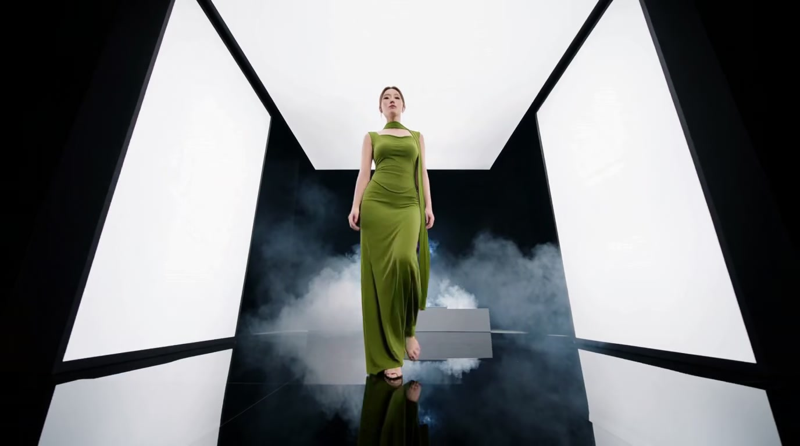
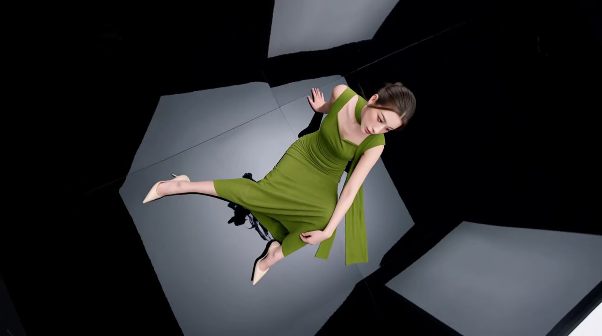
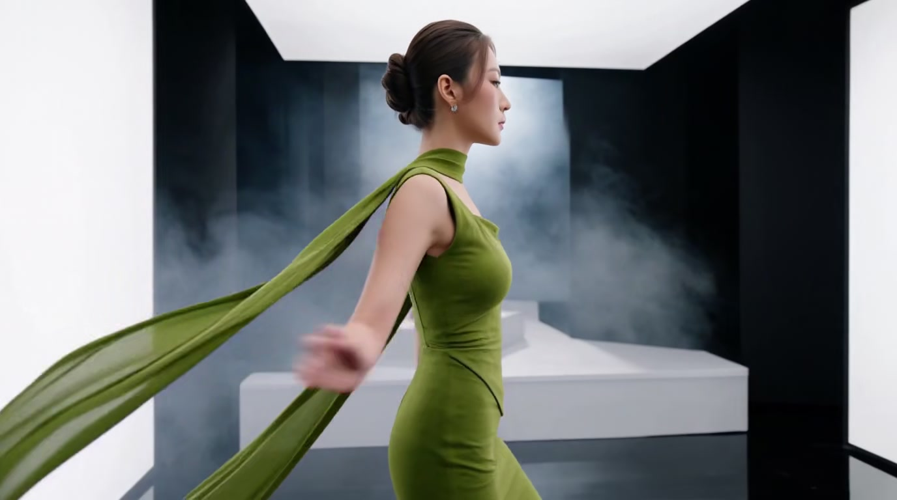
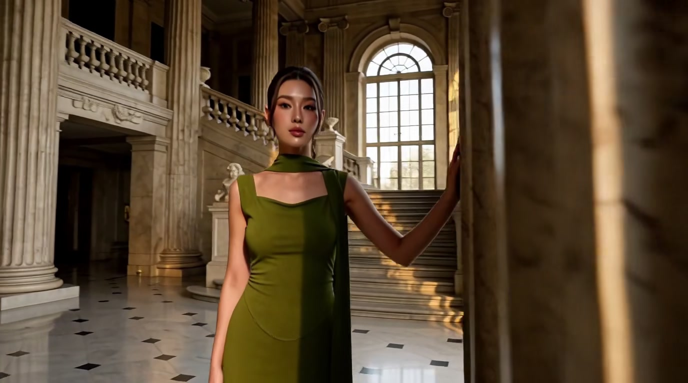
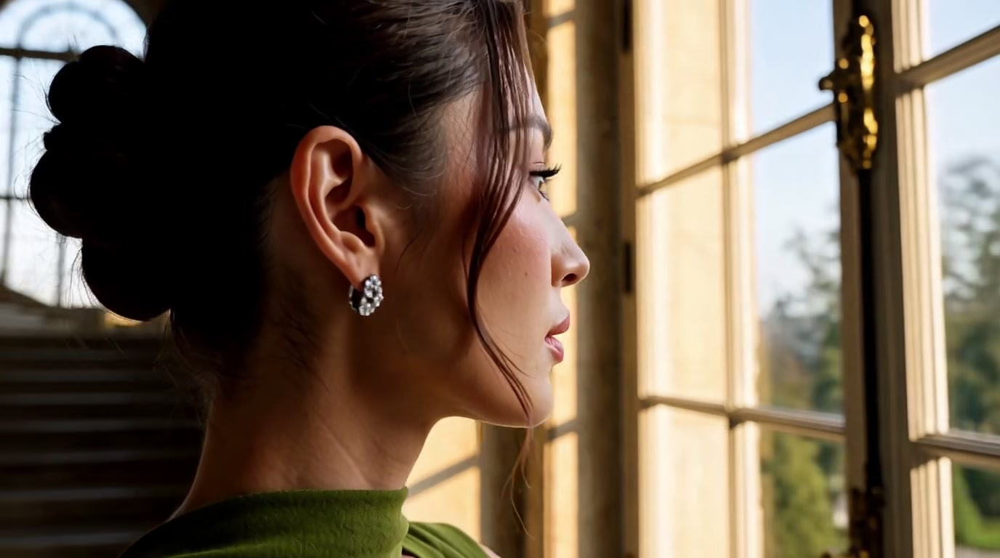
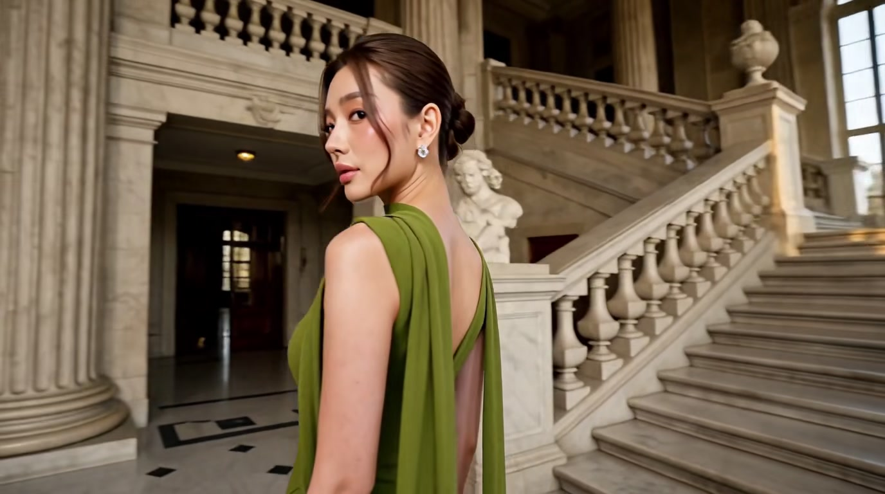
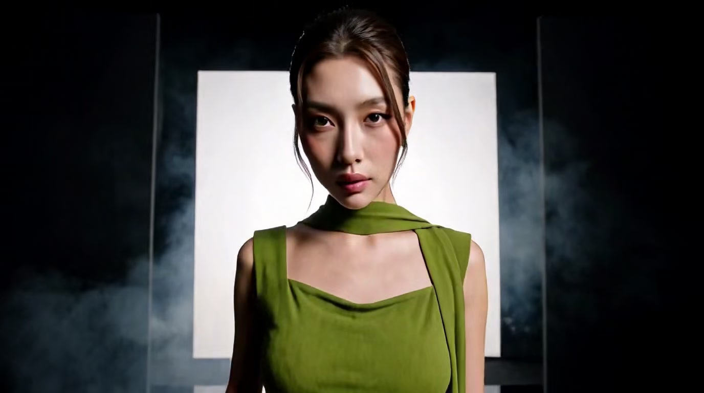
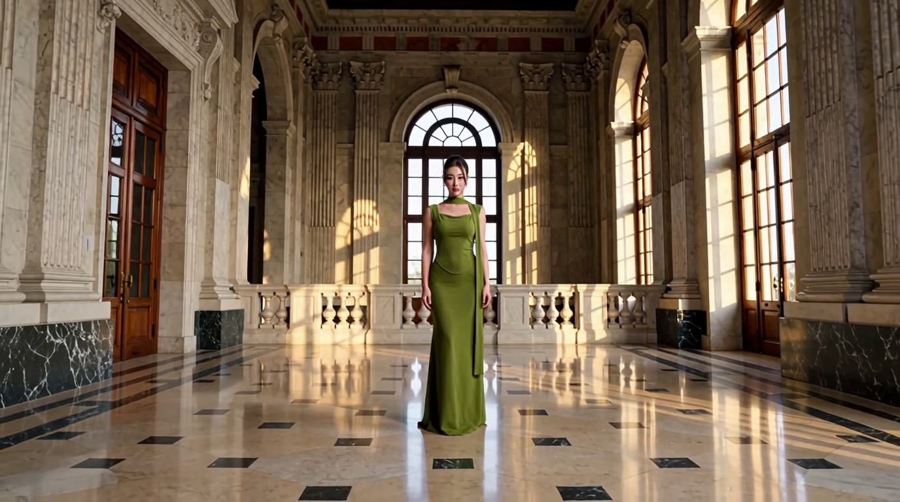

A studio-to-palace luxury fashion film adapted from two Seedance 2.5 prompts into four MiniMax H3 Ref2VA prompts (5 poses each, 15s per part, 60s total). Static snapshot (no embedded video — clips aren't stored in-repo). The full interactive report with all four playable clips and the 60-second combined scene-change chart is published live:
Open the full interactive report →







Part 3's Pose 3 (a golden-window profile portrait) held roughly 4-5 seconds past its own
scripted end, and the cost came out of Pose 4 (a seated marble-staircase pose) entirely — it
never appears in the clip — with Pose 5 surviving only as a ~1-second compressed fragment at the
very end. Confirmed by near-zero scene-change scores (0.02, 0.01) at both of Pose 4/5's scripted
cut points, against 0.4+ at every other cut in the same clip. See
references/multi-pose-fashion-sequence.md for the full three-finding writeup (this
cumulative-drift case, an undefined-footwear attribute invented three different ways across the
film, and a prose-only cross-generation "seamless transition" that worked on one boundary and not
the other) and part1-4-prompt.md for the prompts that produced these clips.
| Part | Result |
|---|---|
| Part 1 (Studio, poses 1-5) | MOSTLY STRONG — one real identity drift (Pose 3: dress shortens, footwear invented) |
| Part 2 (Studio, poses 6-10) | MOSTLY STRONG — minor wardrobe/timing drift, final payoff under-delivers its own scripted scale |
| Part 3 (Palace, poses 1-5) | DRIFT CASE — one full pose compressed out of the clip entirely |
| Part 4 (Palace, poses 6-10) | STRONG — every pose landed on schedule, strongest payoff of the film |